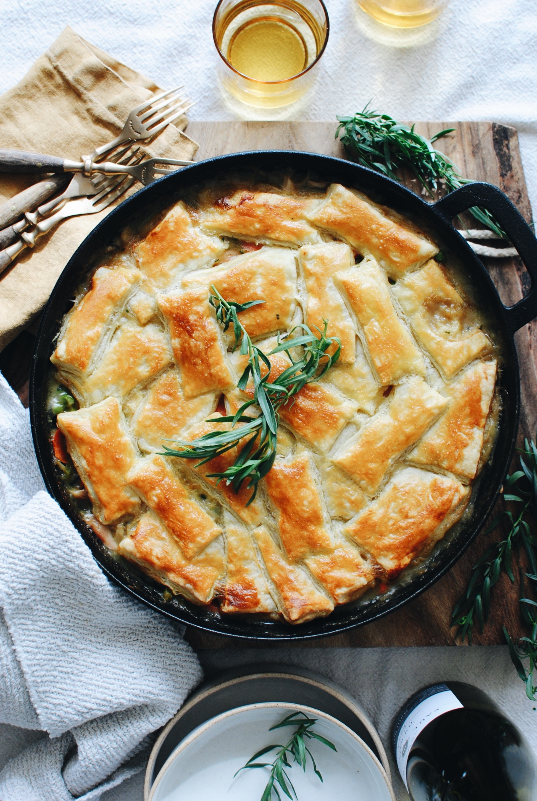

Chicken Pot Pie

Description
Holy shit this thing is delicious and easy as hell!
Ingredients
- 1 rotisserie chicken, shredded
- extra virgin olive oil
- 2 shallots, sliced
- 3 carrots, sliced
- 3 celery stalks, sliced
- 3 Tbsp. butter
- 3 Tbsp. flour
- 1/2 cup dry white wine
- 1 Tbsp freshly chopped rosemary
- 1 tsp freshly chopped thyme
- 1/2 cup heavy whipping cream
- 1/2 cup peas (frozen or canned)
- 2 puff pastry sheets, thawed and cut into desired shape
- 1 egg, beated
- salt and pepper to taste
Instructions
- Preheat oven to 375 degrees Fahrenheit
- In a large cast iron skillet, heat the oil over medium high heat. Add shallots, carrots, and celery and saute about 5 minutes, or until they begin to soften and brown. Season with some salt and pepper, set aside for later.
- In the skillet, melt butter. Once foaming, whisk in flour until smooth. Continue mixing until it becomes golden brown, about 30 seconds or so. Add in white wine and fresh herbs (rosemary, thyme) and whisk for about 30 seconds. Season with a pinch of salt, then add in half a cup of chicken stock and mix. Slowly add the rest of the chicken stock, followed by the heavy cream. Mix, then turn down heat and let mixture simmer for about ten minutes.
- Add back the vegetables, chicken, and peas. Season if desired, then mix thouroughly.
- Arrange the puff pastry sheets on top in desired pattern. Brush the top with the egg, and bake 30-40 minutes until golden brown and puffed.
- Let rest about 1- minutes, then serve!